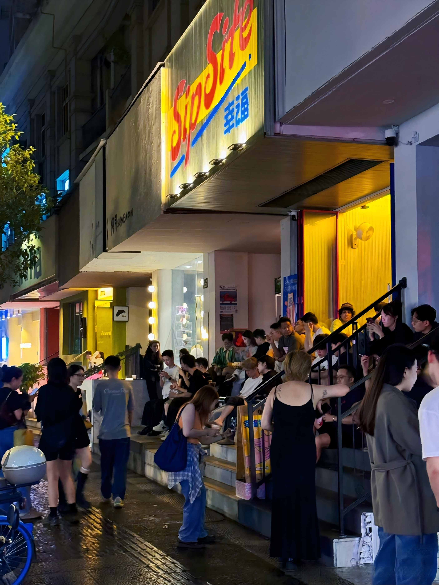
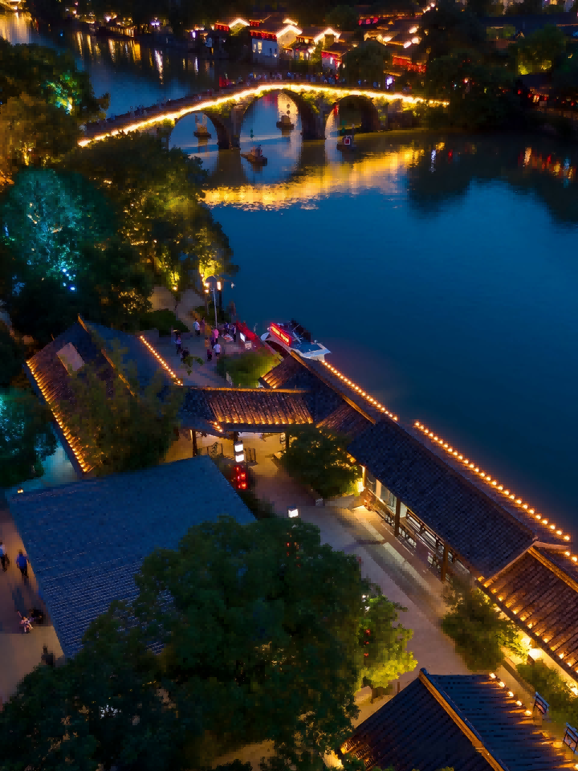

Hangzhou Nightlife: A Local Guide to Hangzhou Nightlife

Hangzhou doesn’t have Shanghai’s club scene or Beijing’s underground music culture. That’s not a weakness — it just means the nightlife here follows a different rhythm. This is a city where going out at night means canal-side dinner with cold beer, or a live house in an old factory building, or a night market where you eat five things from five different stalls and call it a night. The best evenings in Hangzhou feel unhurried.
🍜 Street food crawl? → Wulin or Wushan night market, typically open around 17:00–23:00; check Dianping before you go.
🍺 Dinner + drinks by the water? → Shengli River Food Street, canal-side, typically open until around 2 AM.
🎸 Live music? → 9 Club (酒球会) or MAO Livehouse — check WeChat for shows.
🌙 Quiet walk? → West Lake at night, or late tea by the east shore.
Night Markets — The Heart of Hangzhou After Dark
Chinese cities come alive at night in a way that surprises most first-time visitors, and Hangzhou’s night markets are where you’ll find the city at its most unguarded. Locals of all ages — families, couples on dates, groups of friends, solo diners — converge on these strips of food stalls, craft vendors, and neon lights. Here are the four worth knowing. Hours and venues change quickly — check Dianping (大众点评) or venue WeChat accounts before you go.
Wulin Night Market (武林夜市)
The big one. Nearly 200 stalls packed into a pedestrian strip lit up like a carnival. The food range is absurd: traditional Hangzhou snacks — 葱包烩 (scallion wraps pressed on a hot griddle), sticky rice lotus root stuffed with sweet osmanthus, 定胜糕 (steamed victory cakes) — next to Changsha stinky tofu, Thai cheese sticks, Vietnamese spring rolls, and whatever viral food trend is currently sweeping Chinese social media. There’s also a strong craft scene: embroidery, leatherwork, calligraphy, young artists selling prints. Open roughly 17:00–23:00. The most photogenic market and the easiest to reach — 10 minutes’ walk from West Lake.
Wushan Night Market (吴山夜市)
The veteran. Hangzhou’s original night market, though it’s shifted locations over the decades. The balance tilts toward stuff over food — about three-quarters of the stalls sell clothes, accessories, and knickknacks. Bargaining is expected, and on a good night you can find interesting things among the junk. There’s food too: skewers, fried noodles, the usual. Opens around 18:00, runs late. More local and less polished than Wulin — if you want the “real” market experience without the Instagram crowd, come here.
Shengli River Food Street (胜利河美食街)
Less a market, more a canal-side restaurant row. Thirty-odd eateries line the water, red lanterns strung between whitewashed buildings. The anchor is 老头儿油爆虾 (Old Man’s Oil-Blasted Shrimp), a Hangzhou institution serving river shrimp flash-fried with soy and ginger. Also worth trying: beef offal hotpot and 小厨师沈家门海鲜 (fresh seafood from Zhoushan fishing ports). Grab an outdoor table by the canal, order cold beer, and watch the boats drift past. Open roughly 17:00–次日2:00 (until 2 AM). Best for: a proper sit-down dinner outdoors, not a quick snack crawl.
Wujiao Jinjie (吾角金街)
The student-and-young-crowd option. 100+ food stalls, stays open past midnight, and the vibe is louder and faster than the more central markets. If you’re staying in the east side of the city or want late-night food after everything else closes, this is your spot. Not worth a special trip from the lake area, but excellent if you’re nearby.
Canal-Side Dinner & Drinks — The Hangzhou Specialty
The Grand Canal at night is Hangzhou’s most underrated evening experience. The area around Xiaohe Straight Street (小河直街) and Gongchen Bridge (拱底桥) transforms after sunset: stone bridges lit from below, red lanterns reflected in still water, small bars and tea houses tucked into hundred-year-old buildings. This isn’t party central — it’s where you go for a long dinner that turns into drinks that turn into a walk along the water when the crowds are gone.
The canal area is concentrated in Gongshu District, about 15 minutes by taxi from West Lake. Start at Xiaohe Straight Street around 5 PM, browse the craft shops before they close, then pick a canal-side restaurant for dinner. After eating, walk north along the canalside path toward Gongchen Bridge — the stone arch lit up at night with the city behind it is one of the best photo spots in Hangzhou.
For a deeper dive into this neighborhood during the day, see the Hidden Corners section of the Hangzhou city guide.
Bars Worth Going To
Nanshan Road (南山路) was Hangzhou’s bar street in the 2000s — tree-lined, lake-adjacent, and briefly legendary. It’s mostly faded now, with a handful of quieter cocktail bars still holding on. The action has moved elsewhere.
The current center of gravity is Zhongshan North Road (中山北路) and the lanes around it in central Hangzhou. This stretch has become the city’s craft beer and cocktail corridor — taproom after taproom within a few blocks, small shopfronts, good crowds, walkable. You’ll find local breweries like 青门 Taproom (Qingmen) and cozy cocktail spots like southern trip and SipSite — search these names in Dianping for exact addresses, as shopfronts shift. The vibe is casual, the prices are reasonable, and most places pour by the glass rather than pushing bottle service. Nearby Zhongshan Middle Road (中山中路) extends the strip south with more options.
Wulin Square (武林广场) and the surrounding blocks offer a mix — larger venues, clubs, and a few higher-end cocktail bars. Metro: 武林广场 Wulin Square (Line 1). The Baochu Road (保俶路) corridor near the lake has become a nightclub hub, with BPM CLUB, SHOOT CLUB, and similar spots drawing the late-night crowd. Metro: 凤起路 Fengqi Road (Line 1/2). Farther north, the Xintiandi (新天地) complex in Gongshu District hosts bigger venues like 響 Livehouse and OT onethird. Metro: 新天地街 Xintiandi Street (Line 4).
One thing to know: bars in China often operate on a “buy a bottle, get a table” model at higher-end places — you’re not paying cover, you’re buying a bottle of whiskey or baijiu and getting mixers, snacks, and a table for the night. This adds up fast if you’re solo. For a more normal bar experience, stick to the Zhongshan Road taprooms and smaller cocktail bars where you order by the drink. 大众点评 (Dianping) is your best tool for finding what’s currently open and popular — the scene shifts fast. More on Dianping →

Live Houses & Music Venues
Hangzhou has a small but loyal live music scene. It’s not Beijing — you won’t find three shows every night — but when a band comes through, the rooms are good and the crowds know their music. Shows and venue hours change frequently — always check before you go.
The city’s best-known venue is 酒球会 (9 Club) in Xihu District — near 万塘路 Wantang Road, Metro: 学院路 Xueyuan Road (Line 2). A Hangzhou institution that’s hosted everyone from indie rock to experimental electronic acts for over a decade. Check their WeChat (酒球会) for show listings. MAO Livehouse (上城区 Shangcheng District) is the national chain’s Hangzhou outpost, booking bigger touring acts and drawing solid crowds. Both venues use WeChat for ticketing and announcements — search the venue name and you’ll find their official accounts.
For something completely different, the China National Silk Museum (中国丝绸博物馆, Xihu District) occasionally hosts classical and traditional music performances in the evenings — check their website. It’s not a regular thing, but catching a guqin performance in a world-class museum after hours is about as Hangzhou as it gets.
West Lake at Night — Free and Worth It
The most accessible night activity in Hangzhou costs ¥0 and requires no planning: walk around West Lake after dark. The lake is ringed with walking paths that are well-lit along the north and east shores. The lights from the city reflect on the water. In summer, the lotus ponds hum with insects. In spring, the willows move in the night breeze. It’s not a “bar” or a “venue” — it’s just a beautiful walk, and it’s what locals do when they want to clear their head after dinner.
On select evenings, there’s a light-and-music fountain show on the lake near Hubin — check current schedules locally as they change seasonally. Even without the show, the north and east shores have the best night views. The Su Causeway is darker and quieter at night; lovely for a walk but bring a phone flashlight.
Late-Night Tea Houses — The Unexpected Option
One thing most visitors don’t realize: tea houses in Hangzhou stay open late, and they’re a legitimate evening activity. Several tea houses around the lake serve until 10 or 11 PM. You sit by the water, work through a pot of Longjing or a flight of local teas, and the evening passes at tea-speed instead of bar-speed. It’s the Hangzhou version of a wine bar — slower, quieter, completely local. Near the east shore of the lake (湖滨 Hubin area), look for tea houses with terrace seating.
Practical Notes for Going Out in Hangzhou
- Metro stops running around 22:30–23:00 depending on the line. After that, use DiDi — a ride across the city center is roughly ¥25–40. DiDi guide →
- Mobile payment is easiest; cash is legal tender, but Alipay or WeChat Pay is usually more convenient. Most bars, night markets, and venues take both. Set up Alipay before you go →
- You need a phone with data. DiDi requires internet. Google Maps is not reliable enough for local navigation in China. Use Amap (高德地图) or Apple Maps. Essential apps →
- Stick to well-lit main streets, and use DiDi to get between neighborhoods. Confirm the license plate before getting in. Late at night, stick to well-lit main roads.
- Check venue WeChat accounts or Dianping before going. Opening hours, show schedules, and even the existence of a venue can change quickly in China. A quick WeChat search for the venue name, or a Dianping (大众点评) check, is the best way to confirm what’s actually open tonight. More on Dianping →
- Nightlife and pop-culture scenes shift fast. Even locals who aren’t dedicated nightlife regulars struggle to keep up. Bars open, rebrand, and close within months. For the most current intel — what’s hot right now, what just opened, what quietly died — search 大众点评 (Dianping), China’s Yelp. The app is Chinese-only (screenshot-translate is your friend), but the review volume makes it one of the most practical real-time sources for checking what is open.
🌃 Ready to plan your nights?
Pair this with the full 3-day Hangzhou itinerary — each day ends with the right evening plan built in.
3-Day Hangzhou Itinerary →📋 Landing in China? Get the free arrival checklist
Alipay setup, VPN, eSIM, and the exact steps for your first 48 hours — all in one place.
Send Me the Checklist →